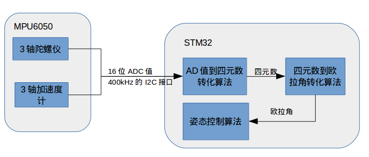
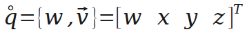
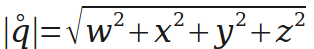
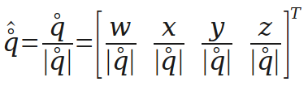
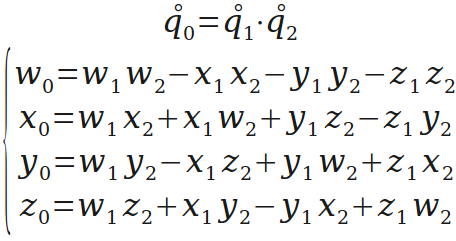
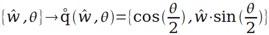
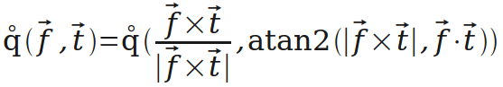
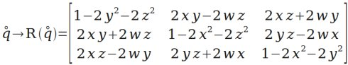
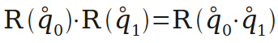
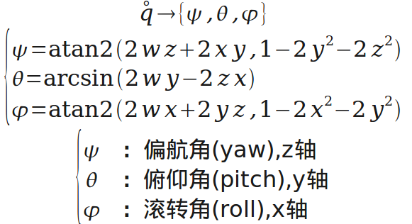

四元數是由愛爾蘭數學家威廉·盧雲·哈密頓在1843年發現的數學概念。從明確地角度而言，四元數是複數的不可交換延伸。如把四元數的集合考慮成多維實數空間的話，四元數就代表著一個四維空間，相對於複數為二維空間。
四元數大量用於電腦繪圖（及相關的圖像分析）上表示三維物件的旋轉及方位。四元數亦見於控制論、信號處理、姿態控制、物理和軌道力學，都是用來表示旋轉和方位。
相對於另幾種旋轉表示法（矩陣，歐拉角，軸角），四元數具有某些方面的優勢，如速度更快、提供平滑插值、有效避免萬向鎖問題、存儲空間較小等等。
以上部分摘自維基百科-四元數。
姿態解算的核心在於旋轉，一般旋轉有4種表示方式：矩陣表示、歐拉角表示、軸角表示和四元數表示。矩陣表示適合變換向量，歐拉角最直觀，軸角表示則適合幾何推導，而在組合旋轉方面，四元數表示最佳。因為姿態解算需要頻繁組合旋轉和用旋轉變換向量，所以採用四元數保存組合姿態、輔以矩陣來變換向量的方案。
總結來說，在crazepony中，姿態解算中使用四元數來保存飛行器的姿態，包括旋轉和方位。在獲得四元數之後，會將其轉化為歐拉角，然後輸入到姿態控制算法中。
姿態控制算法的輸入參數必須要是歐拉角。AD值是指MPU6050的陀螺儀和加速度值，3個維度的陀螺儀值和3個維度的加速度值，每個值為16位精度。AD值必須先轉化為四元數，然後通過四元數轉化為歐拉角。這個四元數可能是軟解，主控芯片（STM32）讀取到AD值，用軟件從AD值算得，也可能是通過MPU6050中的DMP硬解，主控芯片（STM32）直接讀取到四元數。具體參考《MPU60x0的四元數生成方式介紹》。
下面就是四元數軟解過程，可以由下面這個框圖表示：

下面介紹一下四元數，然後給出幾種旋轉表示的轉換。這些運算在crazepony的代碼中都會遇到。
四元數可以理解為一個實數和一個向量的組合，也可以理解為四維的向量。這裡用一個圈表示q是一個四元數（很可能不是規範的表示方式）。

四元數的長度（模）與普通向量相似。

下面是對四元數的單位化，單位化的四元數可以表示一個旋轉。

四元數相乘，旋轉的組合就靠它了。

旋轉的“軸角表示”轉“四元數表示”。這裡創造一個運算q(w,θ)，用於把繞單位向量w轉θ角的旋轉表示為四元數。

通過q(w,θ)，引伸出一個更方便的運算q(f,t)。有時需要把向量f的方向轉到向量t的方向，這個運算就是生成表示對應旋轉的四元數的（後面會用到）。

然後是“四元數表示”轉“矩陣表示”。再次創造運算，用R(q)表示四元數q對應的矩陣（後面用到）。

多個旋轉的組合可以用四元數的乘法來實現。

“四元數表示”轉“歐拉角表示”。用於顯示。
